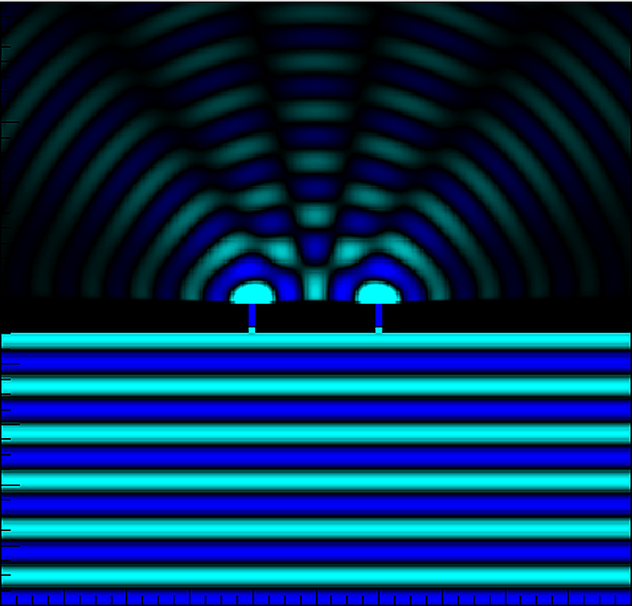

What are we measuring?
To determine the wavelengths of prominent lines of mercury using a plane diffraction grating.
Equipment
Fraunhofer diffraction through a plane grating
A plane diffraction grating is an optical element containing a very large number of equally spaced, parallel transparent slits separated by opaque regions. The spacing from one slit to the corresponding point on the next slit is called the grating element,
where e is the width of a transparent slit and c is the width of the opaque portion. If the grating has N rulings per metre, then
When parallel monochromatic light falls normally on the grating, the waves emerging from successive slits interfere. Principal maxima occur when the path difference between waves from adjacent slits is an integral number of wavelengths.
Here θ is the diffraction angle measured from the direction of the incident beam, n is the order of the spectrum (0, ±1, ±2, ...), and λ is the wavelength. Therefore, for a known grating and order, the wavelength can be obtained from
The zeroth order corresponds to n = 0, so it lies along the direction of the incident light and all wavelengths overlap there. For non-zero orders, different wavelengths are diffracted through different angles. This angular separation is the reason a diffraction grating is useful for measuring wavelengths and analysing spectra.
For normal incidence, the positive and negative orders appear symmetrically on the two sides of the zeroth-order image. In this experiment the telescope is therefore moved to the left and right sides and the corresponding vernier readings are recorded. For a given colour, the readings from the two sides are combined to determine the angle between the two corresponding spectral positions; half of that angle gives the diffraction angle θ used in the grating equation. Taking readings on both sides also reduces the effect of a zero/reference error in the angular scale.
A mercury vapour lamp is used because it produces a well-defined line spectrum. The spectrometer uses a collimator to produce a parallel incident beam and a rotatable telescope to observe the direct and diffracted images.
In the digital observation table, the calculator implements the equivalent combined expression directly and evaluates each colour independently. The three wavelengths are reported separately rather than averaged.
For students who want to go beyond the laboratory procedure, these textbook sections develop the wave-interference picture, diffraction theory, and the derivation and use of the grating equation.
Visualizing wave interference

An animated wavefront model showing two coherent waves propagating and overlapping to form constructive and destructive interference regions.
See the experiment in the laboratory
Watch a laboratory demonstration of the diffraction-grating setup, mercury spectrum, and spectrometer readings used to determine wavelength.
Experimental sequence
- Calibrate the spectrometer by focusing the telescope on a distant object, if possible.
- Level the main body of the spectrometer and the prism table using the provided screws and spirit level.
- Adjust the slit screw to obtain a sharp and vertical slit.
- Determine the least count.
- Mount the grating vertically over the prism table.
- Set the grating for normal incidence using the direct image, reflected image and the prism-table rotation described in the manual.
- Rotate the telescope to the left of the direct image to obtain the first-order spectrum. Note V1 and V2 for each colour.
- Rotate towards the right side and obtain the first-order spectrum of the same colours. Note V1 and V2 again.
- Find the difference of corresponding vernier readings. The manual specifies taking half of the angle obtained as the diffraction angle for the colour and order.
- Determine the wavelengths using the grating equation.
Enter your actual lab readings
| Colour | Left V1 | Right V1 | Left V2 | Right V2 | θ (°) | λ (nm) |
|---|---|---|---|---|---|---|
| Colour 1 | — | — | ||||
| Colour 2 | — | — | ||||
| Colour 3 | — | — |
Calculated wavelengths
A simple visual check of the wavelength values obtained for the entered colour rows.
Experimental result
Complete at least one observation row to generate the result statement.
Think like an experimental physicist
These questions are designed to make you predict, reason from the apparatus, and connect an observation with the physics behind it. Try to explain your reasoning before opening the answer.